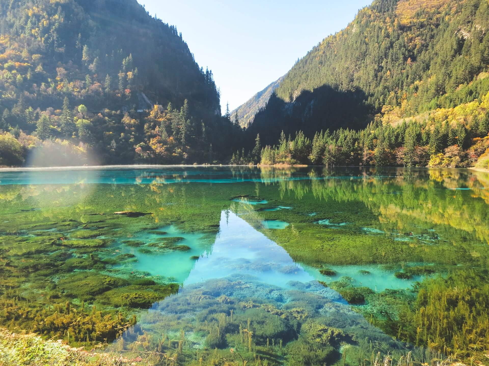
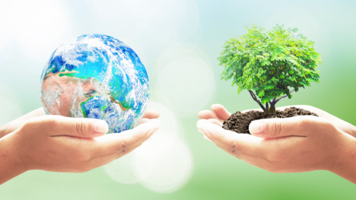
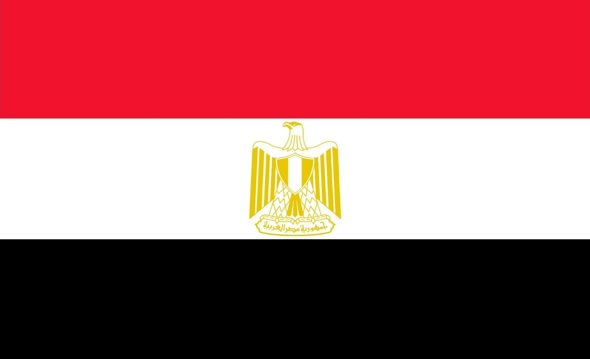
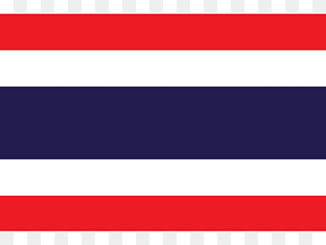
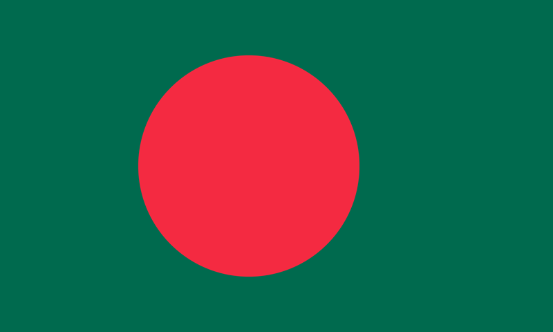

Cómo evitar la contaminación del agua
l agua es uno de los bienes naturales más preciados que necesita el planeta y nuestras sociedades. De hecho, uno de los problemas más urgentes a los que nos vamos a tener que enfrentar en las próximas décadas es el referido al acceso del agua potable, ya que la degradación de los acuíferos, así como las sequías y las lluvias torrenciales (consecuencias directas del cambio climático) amenazan el acceso al agua dulce, tanto para el ser humano como para los ecosistemas terrestres.
Debido a esto, es fundamental que tomemos medidas de manera urgente, no solo para evitar que este proceso de contaminación del agua continúe, sino para que sea posible revertir el daño ya causado y reconstruir los ecosistemas dañados por la acción del hombre. En EcologíaVerde te presentamos diez maneras básicas y sencillas de cómo evitar la contaminación del agua y conseguir preservar este recurso natural fundamental.
Fuente: Ecología verde10 acciones para cuidar nuestro planeta
En los últimos cien años, las actividades de la humanidad han causado un aumento del 0.85º centígrados en la temperatura del planeta. Esto parece poco, pero para la naturaleza ha sido demasiado. El aumento en la temperatura ha causado sequias e inundaciones en zonas donde antes el clima era placido, además de que aceleró el derretimiento del Ártico. Nuestro país no se encuentra alejado de este problema, ya que en el mismo tiempo la mitad del territorio se ha degradado. Con el lema “Es el momento de asumir el liderazgo” la Organización de las Naciones Unidas nos recuerda el día de hoy que aún estamos a tiempo de detener el desastre ecológico y con ello rescatar nuestro único hogar: El planeta tierra. Todos podemos hacer algo para cuidar a la Madre Tierra. A continuación encontrarás 10 pequeñas acciones que dan grandes resultados.
Mantén cerrado el grifo mientras no necesites el agua y siempre que puedas reutilízala. Si vas a regar tus plantas hazlo muy de mañana o por las tardes para que no se evapore tan rápido el agua.
Usa el transporte público, bicicleta, camina o comparte tu coche con los vecinos cuando engas que usarlo.
En casa puedes tomar las siguientes acciones: Cambiar tu calentador de gas por uno solar. Apaga las luces que no utilices y desconecta los aparatos eléctricos. Cambia los focos de bombilla por focos ahorradores. El refrigerador es el aparato que más energía consume en tu casa, para mantener su consumo al mínimo proracura mantenerlo en entre 3 y 5 grados, el congelador en entre -17 y -15 grados, abrirlo lo menos posible y mantenerlo lejos de las fuentes de calor (como la estufa).
De preferencia no uses artículos desechables, ni recipientes de aluminio y de plástico. Consume sólo lo que necesitas y agota la vida útil de las cosas. Recuerda que productos como las botellas de plástico pueden tardar entre 100 y 500 años en degradarse completamente.
Reducir, reutilizar y reciclar, es la clave de un mejor medio ambiente. Separa tu basura, recicla el papel y compra productos reciclados. Si la basura no recibe un manejo adecuado es fuente de contaminación de suelos, agua y aire.
Elige productos elaborados localmente, pues así se reduce el consumo de combustibles empleados para su transporte. También procura comparar en mercados, allí se venden frutas y verduras orgánicas. De ser posible, compra ropa hecha de algodón orgánico y no de materiales derivados del petróleo, que son más contaminantes. Lleva contigo una bolsa de tela para que no utilices bolsas de plástico cuando hagas compras.
El sol es inigualable como fuente de luz natural, pero también puedes usar su energía para dar electricidad a los aparatos de tu casa o gadgets como tu smartphone o Tablet. Hay muchos más aparatos eléctricos que se pueden cargar con energía solar de los que crees.
Hay productos naturales que pueden dar los mismos resultados cuando de limpiar se refiere. Por ejemplo: El vinagre es un desinfectante suave que corta la grasa, limpia el vidrio, desodoriza y remueve los depósitos de calcio, manchas y acumulación de cera. El carbonato de sodio también corta la grasa, quita manchas, desinfecta y suaviza el agua. (No lo uses en aluminio) También puedes limpiar con jabón puro que se biodegrada de manera segura y no es tóxico.
Cuida los bosques no provocando incendios, tirando basura o maltratando a los árboles. Recuerda que ellos nos proporcionan el oxígeno que necesitamos para vivir. Apoya las campañas de manejo forestal sustentable.
No tires basura en las calles, no sólo contamina también tapa las coladeras y provoca inundaciones, tampoco tires el aceite que no sirva por las cañerías ni baterías, ya que general materiales tóxicos que son dañinos para la salud y contaminan el agua, haciéndola imposible de tratar.
Países con mayor contaminación de dióxido de carbono
| Lugar | País | CO2 |
|---|---|---|
| 1 |  China China |
más de 10.065 millones de toneladas de CO2 |
| 2 |  Estados Unidos Estados Unidos |
con 5.416 millones de toneladas de CO2 |
| 3 |  India India |
con 2.654 millones de toneladas de CO2 |
| 4 | Rusia | con 1.711 millones de toneladas de CO2 |
| 5 |  Japón Japón |
1.162 millones de toneladas de CO2 |
| 6 | Alemania | 759 millones de toneladas de CO2 |
| 7 |  Irán Irán |
720 millones de toneladas de CO2 |
| 8 |  Corea del sur Corea del sur |
659 millones de toneladas de CO2 |
| 9 |  Arabia Saudita Arabia Saudita |
621 millones de toneladas de CO2 |
| 10 |  Indonesia Indonesia |
615 millones de toneladas de CO2 |
Países que más contaminan los oceanos
| Lugar | País | Millones de toneladas |
|---|---|---|
| 1 | China |
8,8 millones de toneladas de plástico |
| 2 | Indonesia |
3,2 millones de toneladas de plástico |
| 3 | Filipinas | 1,9 millones de toneladas de plástico |
| 4 |  Vietnam Vietnam |
1,8 millones de toneladas de plástico |
| 5 |  SriLanka SriLanka |
1,6 millones de toneladas de plástico |
| 6 |  Egipto | 1,0 millones de toneladas de plástico |
| 7 |  Tailandia | 1,0 millones de toneladas de plástico |
| 8 |  Malasia Malasia |
0,9 millones de toneladas de plástico |
| 9 | Nigeria | 10,9 millones de toneladas de plástico |
| 10 |  Bangladés | 0,8 millones de toneladas de plástico |